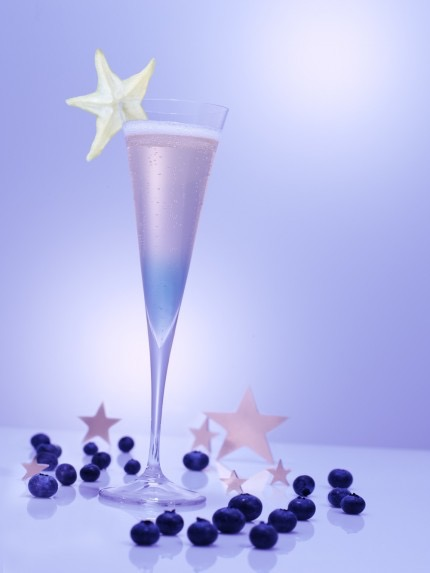

Star of Night Cocktail

Description
Bring in the New Year with this beautiful cocktail.
With this drink you can bring the magic of the NYE night sky inside.
Ingredients
- 4 oz Pommery Pink POP Champagne
- 1 oz. Van Gogh Açai-Blueberry Vodka
- champagne flutes
- starfruit, sliced for garnish
- You can substitute other Rosé Sparkling Wines/Champagnes or other vodkas. The flavors and colorings will vary with the colors of your choices.
Steps
- Pour chilled vodka into individual champagne flutes
- Slowly top with chilled Rosé
- Place small slit in starfruit slice and place on glass